Update Nightscout
Tip
You don’t need to follow these instructions if you use a hosted service.Contact the vendor to learn more about possible updates.
See here which is the current released version before updating.
Step 1: Update your repository in GitHub
Select your current platform below:
- Click here to log in at GitHub: https://github.com/login.
Enter your username or email and your password. Click
Sign in
Select your own
cgm-remote-monitorproject (notnightscout/cgm-remote-monitor)
Your repository will open. If you see
This branch is xxx commits </br>behind nightscout:masteryou need to update.Select
Fetch upstream
Select
Fetch and merge
After a moment, your repository should display
This branch is up to date with nightscout:master You have now updated your GitHub cgm-remote-monitor repository.
If you ran into trouble, you can redeploy the project.
You have now updated your GitHub cgm-remote-monitor repository.
If you ran into trouble, you can redeploy the project.
You don’t need to update your GitHub repository.
You don’t need to update your GitHub repository if you deployed from https://github.com/nightscout/cgm-remote-monitor.
Step 2: Deploy
Continue here
Log in Heroku https://id.heroku.com/login

Select your app (hidden in yellow)

Click on
Deploy
Verify Heroku is connected to GitHub, if not, click
Connect to GitHubIf Heroku is not connected to GitHub, scroll down and click
Connect to GitHub, if a popup window opens and requires authorization, clickAuthorize Heroku
If it isn’t, In
Connect to GitHub, typecgm-remote-monitorand clickSearchthen clickConnect
If you have trouble connecting your app, click
Disconnectand reconnect it as shown above
Scroll down to the bottom of the page, select the
masterbranch and clickDeploy Branch
Build will start and information will scroll in the log window. Do not leave the page, do not interfere and wait for completion. It might take more than 10 minutes.Interrupting the process will lead to a broken site and you’ll need to restart deployment. 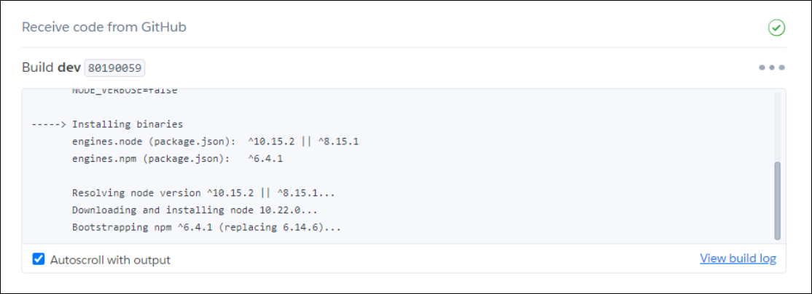
Wait until the deploy process completes and click
View(if nothing happens clickManage Appthen upper rightOpen App)
Your site will open and should be at the latest version.
Check your profile time zone is correct. You’re done! If you ran into trouble, try the Redeploy method
Log into Azure : https://portal.azure.com/
Select your App service, your Nightscout site name (you should see it in recent resources) 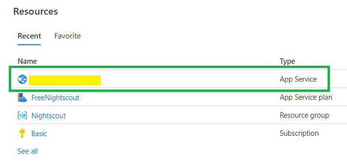
If you didn’t find it, it will show in App Services 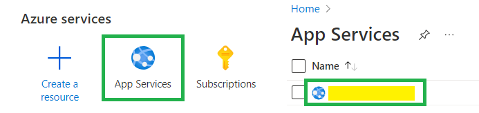
In the left menu select Deployment Center and change Continuous Deployment to On.

Click Save (or Discard if you don’t want to update). Your site will redeploy with the latest cgm-remote-monitor version.
Expect a few minutes before it comes back online.
You can leave Continuous Deployment On if you want upgrades to happen automatically, or turn it back to Off (and save) to control upgrades manually yourself.
Follow these instructions to install flyctl on your computer. You also need to install git if you’re using a Windows computer.
Note for Windows: you might experience issues with Git Bash or PowerShell, try an elevated command prompt.
Log in Fly.io:
flyctl auth loginVerify your Nightscout app name, use it to replace
example-nsin the following lines.flyctl app listVerify your app current region (three letters code) and make sure it’s in the free tier.
flyctl app listNavigate to the
cgm-remote-monitorfolder from which you deployed Nightscout on your computer. Verify it contains thefly.tomlconfiguration file you used to deploy your site.If you don’t see this file, recover it:
flyctl config save --app example-ns
If you migrated from Heroku using the wizard, or if you can’t find this folder on your computer, follow the next steps to recover your Fly.io configuration:
Fork a copy of the Nightscout repository and change directory
git clone https://github.com/nightscout/cgm-remote-monitorcd cgm-remote-monitorDownload a default
fly.tomlconfiguration fileflyctl config save --app example-ns
Update your Nightscout repository
git pullEdit your
fly.tomlconfiguration and search this section:
[[services]]
protocol = "tcp"
internal_port = 8080
processes = ["app"]
Change the internal port value to 1337, do not change anything else, do not remove the spaces before
internal_port.internal_port = 1337Save the
fly.tomlfile.Deploy Nightscout:
flyctl launchWait until completion, you site should now be running the latest Nightscout version.
Updating existing machines in 'example-ns' with rolling strategy
-------
✔ Machine 1781944ae46438 [app] update succeeded
-------
Visit your newly deployed app at https://example-ns.fly.dev/
Downscale the app if you haven’t yet
flyctl scale --app example-ns count 1
Once GitHub updated, your Nightscout should automatically deploy with the latest version.
- Log into Northflank: https://app.northflank.com/login

{kind=link}
{kind=link}
{kind=link}
{kind=link}
{kind=link}
{kind=link}
{kind=link}
{kind=link}
a) Open Railway and click login. Login with GitHub.

 b) Select your Nightscout project.
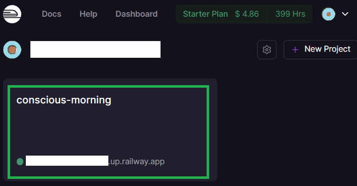
c) Select your Docker service.
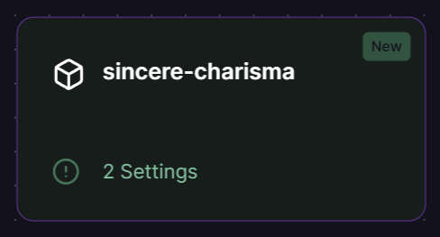
d) Click on
b) Select your Nightscout project.
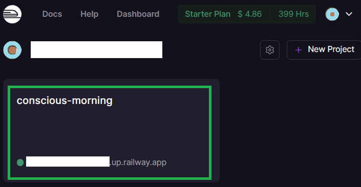
c) Select your Docker service.
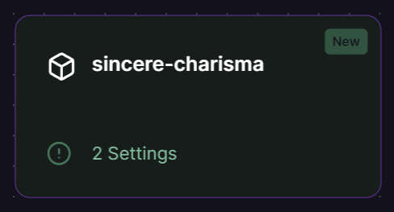
d) Click on Settings, disconnect the source image.
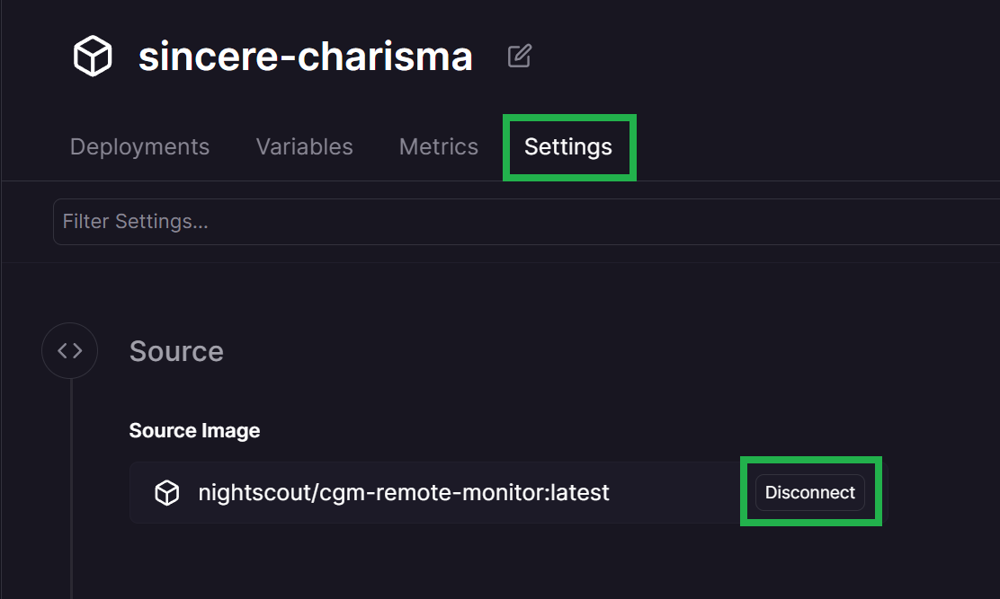
e) Select Connect image and type nightscout/cgm-remote-monitor:latest then press enter.
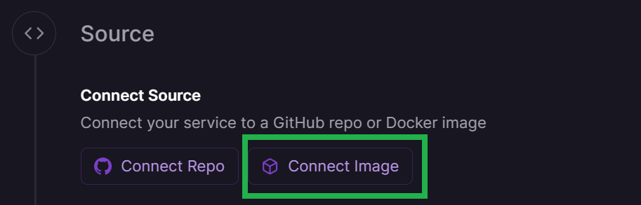
 f) Go to the
f) Go to the Deployment tab and from the three dots menu of the top deployment select Redeploy.
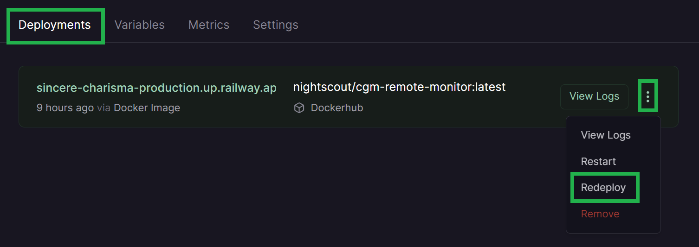
{kind=link}
{kind=link}
{kind=link}
{kind=link}
{kind=link}
Your site will redeploy with the latest version.
Log into Render: https://dashboard.render.com/
Select your Nightscout project 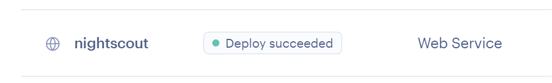
Go to
Settingsand top right expandManual Deploy, SelectDeploy latest reference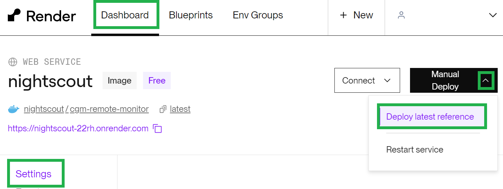Your site will redeploy with the updated Nightscout version
{kind=link}
{kind=link}